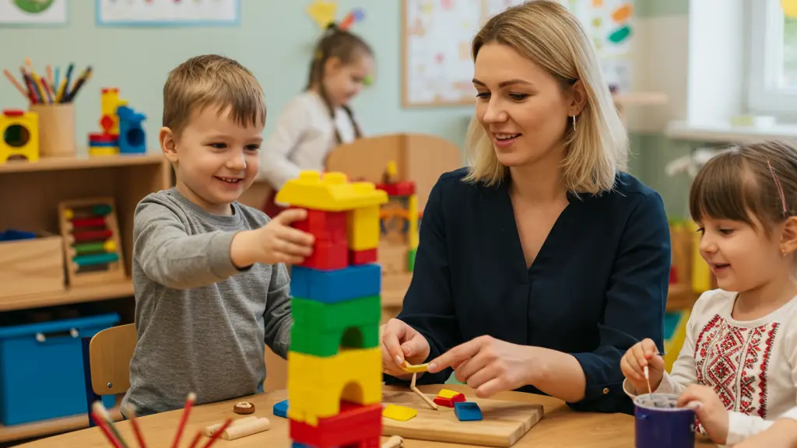

Корекція поведінки та розвиток навичок через АВА терапію

Корекція проблемної поведінки у дітей
АВА терапія корекція поведінки є найефективнішим методом для роботи з широким спектром поведінкових
проблем у дітей з особливими потребами. Проблемна поведінка у дітей може суттєво заважати навчанню
та соціальній
адаптації.
Агресивна та самоагресивна поведінка
Види проблемної поведінки:
- Фізична агресія до інших людей (удари, кусання, штовхання)
- Самоагресія (биття себе, кусання, дряпання)
- Руйнівна поведінка (кидання предметів, ламання іграшок)
- Вербальна агресія (крики, образи, погрози)
Методи корекції через АВА:
- Функціональний аналіз причин агресивної поведінки
- Навчання альтернативних способів вираження потреб
- Розвиток навичок саморегуляції та контролю емоцій
- Корекція аутизму включає роботу з сенсорними тригерами агресії
Стереотипна та повторювана поведінка
Типи стереотипій:
- Моторні стереотипії (махання руками, качання, кружіння)
- Вокальні стереотипії (повторення звуків, слів, фраз)
- Об'єктні стереотипії (вишиковування, обертання предметів)
- Ритуальна поведінка та нав'язливі дії
АВА підходи до корекції:
- Заміна дисфункціональних стереотипій функціональними
- Навчання саморегуляції та переключення уваги
- Структурування середовища для зменшення потреби в стереотипіях
- Розвиток адаптивних способів сенсорної стимуляції
Поведінка уникнення та відмови
Прояви уникнення:
- Відмова від виконання завдань
- Втеча з навчальних ситуацій
- Ігнорування інструкцій дорослих
- Пасивна відмова від участі в активностях
Стратегії АВА терапії:
- Поступове збільшення вимог та складності завдань
- Позитивне підкріплення за співпрацю
- Модифікація завдань для забезпечення успіху
- Навчання навичок подолання труднощів
Розвиток комунікативних навичок
Розвиток комунікативних навичок у дітей з аутизмом є пріоритетним напрямком АВА терапії. Комунікація
- основа соціальної
взаємодії та академічного успіху.
Базові комунікативні функції
Розвиток мовлення через АВА:
- Прохання - навчання дитини просити потрібні предмети та активності
- Називання - розвиток словникового запасу та опису навколишнього світу
- Імітація - відтворення звуків, слів та фраз за зразком
- Підтримання діалогу та відповіді на запитання
АВА терапія для дітей з алалією:
- Поступовий розвиток від жестів до вокалізації
- Використання альтернативних систем комунікації (PECS)
- Інтенсивна робота над артикуляцією та звуковимовою
- Функціональне використання мовлення в повсякденному житті
Розширені комунікативні навички
Соціальне використання мови:
- Ведення діалогу та підтримання розмови
- Розповідання про події та переживання
- Розуміння та використання невербальної комунікації
- Адаптація мовлення до різних соціальних ситуацій
Академічні комунікативні навички:
- Відповіді на запитання різних типів
- Слідування складним інструкціям
- Презентація інформації та власних думок
- Читання та розуміння прочитаного
Розвиток соціальних навичок
АВА терапія для дітей з РАС особливо ефективна у розвитку соціальних навичок, які є ключовими для
успішної інтеграції в
суспільство.
Базові соціальні взаємодії
Фундаментальні соціальні навички:
- Встановлення та підтримання зорового контакту
- Розуміння та використання особистого простору
- Черговість у грі та розмові
- Навички обміну та спільного використання іграшок та матеріалів
Ігрові навички:
- Паралельна гра поруч з іншими дітьми
- Спільна гра з простими правилами
- Творча та рольова гра
- Вирішення конфліктів під час гри
Складні соціальні компетенції
Емоційний інтелект:
- Розпізнавання емоцій на обличчях інших людей
- Вираження власних емоцій соціально прийнятними способами
- Емпатія та співчуття до інших
- Розуміння соціальних сигналів та натяків
Дружба та стосунки:
- Встановлення дружніх стосунків з однолітками
- Підтримання довгострокових соціальних зв'язків
- Вирішення соціальних конфліктів
- Участь у групових активностях та командах
Академічні та когнітивні навички
АВА терапія для дітей з ЗПР та інших когнітивних порушень ефективно розвиває передумови до навчання
та академічні навички.
Передумови до навчання
Навички готовності до школи:
- Концентрація уваги на завданнях протягом необхідного часу
- Слідування інструкціям у групі
- Сидіння за партою та виконання структурованих завдань
- Взаємодія з учителем та однокласниками
АВА терапія для дітей з СДУГ:
- Розвиток навичок концентрації та стійкості уваги
- АВА терапія гіперактивність - зменшення імпульсивних реакцій
- Навички планування та організації діяльності
- Самоконтроль та саморегуляція поведінки
Академічні предмети
Математичні навички:
- Рахунок та розуміння чисел
- Основні математичні операції
- Вирішення простих задач
- Розуміння часу, грошей, вимірювань
Навички читання та письма:
- Розпізнавання букв та звуків
- Складання слів та речень
- Розуміння прочитаного тексту
- Навички письма та графомоторики
Навички самостійності та самообслуговування
Навички самообслуговування для дітей з особливими потребами критично важливі для незалежного
функціонування в суспільстві.
Особиста гігієна та догляд
Базові навички самообслуговування:
- Туалетні навички та контроль сечовипускання
- Миття рук, чищення зубів, догляд за волоссям
- Одягання та роздягання самостійно
- Вибір відповідного одягу за погодою
Побутові навички
Навички ведення домашнього господарства:
- Прибирання іграшок та особистих речей
- Допомога на кухні та під час приготування їжі
- Догляд за домашніми тваринами та рослинами
- Основи безпеки дома та на вулиці
Життєві навички для підлітків
АВА терапія для підлітків розвиває:
- Навички користування громадським транспортом
- Купівля товарів у магазині та розрахунки з грошима
- Базові кулінарні навички та планування меню
- Навички пошуку роботи та проходження співбесід
Сенсорна інтеграція та адаптація
Корекція аутизму часто включає роботу з сенсорними особливостями, які можуть значно впливати на
поведінку та навчання дитини.
Сенсорні порушення
Типи сенсорних проблем:
- Гіперчутливість до звуків, дотиків, світла, запахів
- Гіпочутливість та пошук інтенсивних відчуттів
- Труднощі з обробкою вестибулярної та пропріоцептивної інформації
- Сенсорні уникнення або навпаки - сенсорні пошуки
АВА підходи до сенсорної корекції:
- Поступова десенситизація до проблемних стимулів
- Навчання саморегуляції сенсорних потреб
- Створення сенсорно-friendly середовища для навчання
- Використання сенсорних стратегій для покращення концентрації
У нашому центрі індивідуальна програма корекції для дитини з РАС розробляється з урахуванням усіх
аспектів розвитку та
особливих потреб кожної дитини, забезпечуючи комплексний підхід до корекції поведінки та розвитку
навичок.